Why Manavgat, and why this way
On July 28, 2021, a wildfire broke out near Manavgat, on Turkey's Mediterranean coast in Antalya province, and burned for ten days — the largest forest fire in the country's recorded history. This is an independent case study built entirely in ArcGIS Pro, from raw Sentinel-2 imagery to a validated future-risk model.
The goal was not the most visually impressive map, but the most defensible one. Before building a risk model, every assumption that would normally go into one was tested against the real 2021 burn data using zonal statistics rather than taken on faith.
- Location
- Manavgat district, Antalya Province, Turkey
- Event date
- July 28 – August 7, 2021
- Primary tool
- ArcGIS Pro (arcpy, Spatial Analyst, 3D Scenes)
- Imagery
- Sentinel-2 L2A, 10m, Microsoft Planetary Computer
- Coordinate system
- WGS 1984 UTM Zone 36N (EPSG:32636)
Ten days, one province, one record
The fire burned for ten days and became the largest forest fire in the history of the Turkish Republic. The burned-area figure below (60,128 ha) was not taken directly from a classifier's output — the raw classification initially reported 103,447 hectares, well above the 56,663–75,000 ha range reported by an independent satellite study and the Antalya Regional Forestry Directorate.
Measuring destruction: from yellow to deep maroon
Burn severity was measured with the differenced Normalized Burn Ratio (dNBR), computed from Sentinel-2's near-infrared (B08) and shortwave-infrared (B12) bands, then classified against standard USGS severity thresholds.
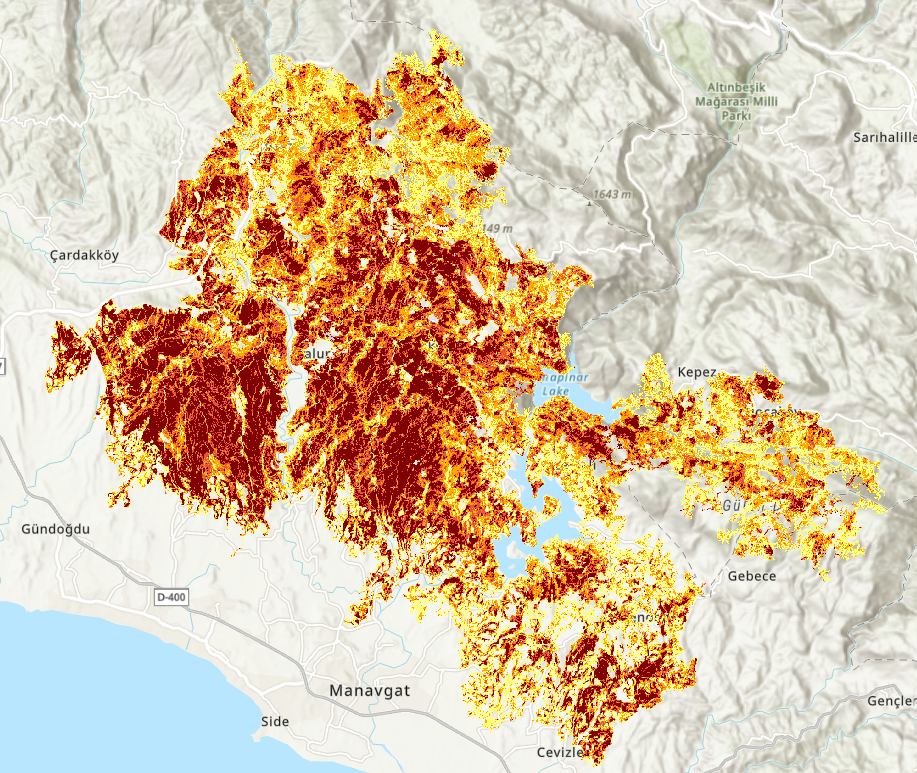
An abnormally hot, typically dry Mediterranean summer
Against the 2015–2020 baseline, the real anomaly was temperature (+1.8°C above average) — the rainfall difference (-0.8 mm) was statistically negligible. This is deliberately not called a "drought": the data doesn't support that word. The dominant wind during the fire blew from the north, accelerating its spread toward the coast.
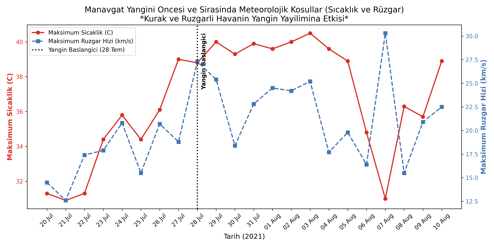
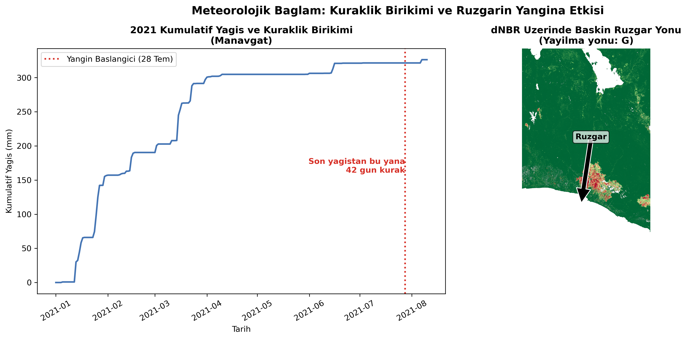
Testing assumptions before trusting them
Before building a future fire-risk model, common wildfire-science assumptions were tested against the real 2021 burn data using zonal statistics in ArcGIS Pro — not assumed, checked.
South-facing slopes burn more severely
Mean real dNBR: south 0.436 · east/west 0.409 · north 0.364 — a clean, expected gradient.
Denser pre-fire vegetation (higher NDVI) carries more fuel
Pre-fire NDVI rose steadily with severity: unburned areas averaged 0.42, the highest-severity class 0.70.
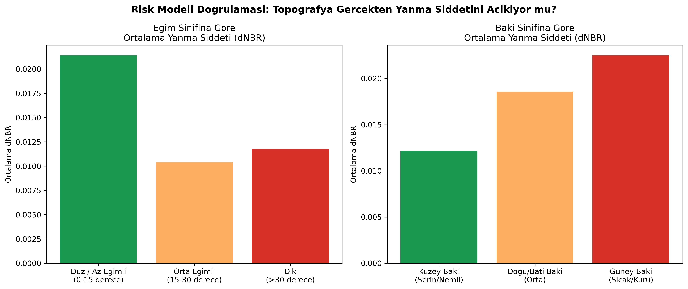
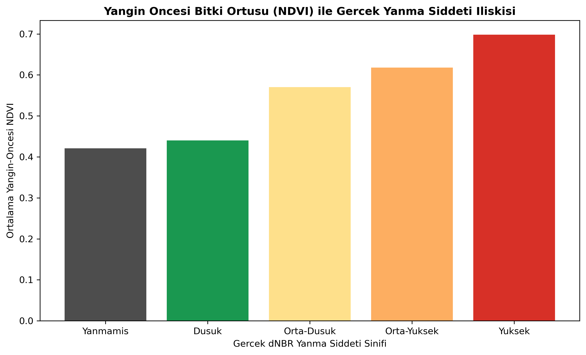
134,676 people within 5 km of the fire
Built from the real fire perimeter, 175 real settlement locations from OpenStreetMap, and WorldPop 2020 population data — not a placeholder radius around a single point.
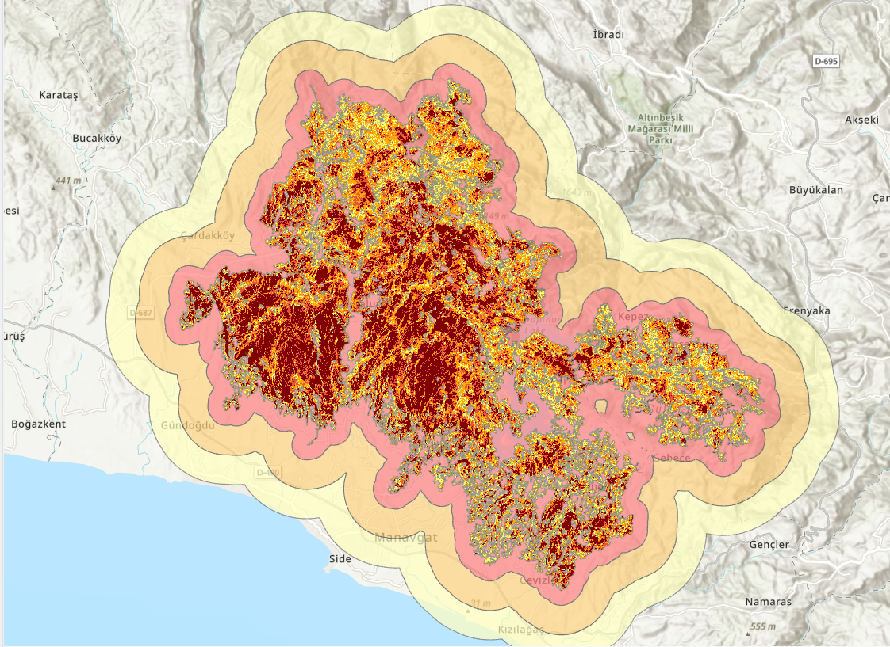
An estimated 2.97 million tonnes of CO₂
Calculated with the IPCC's 2006 AFOLU method. Biomass was not assumed from a generic literature range — it was measured for this specific forest from ESA CCI Biomass's 2020 satellite product.
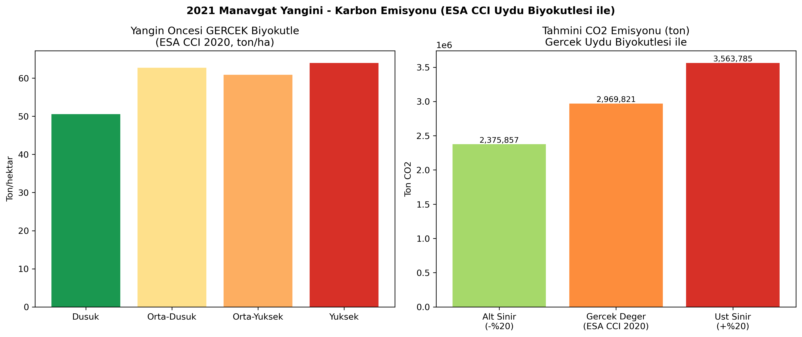
Nature's return from the ashes
Vegetation health (NBR) was tracked for three years, all symbolized on the same colour scale (-1 to 0.7) — using each year's own auto-stretched range would have let symbology differences masquerade as real recovery.
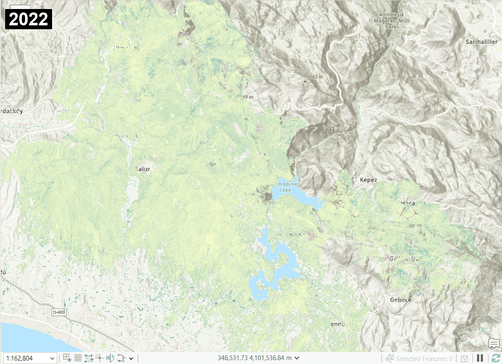
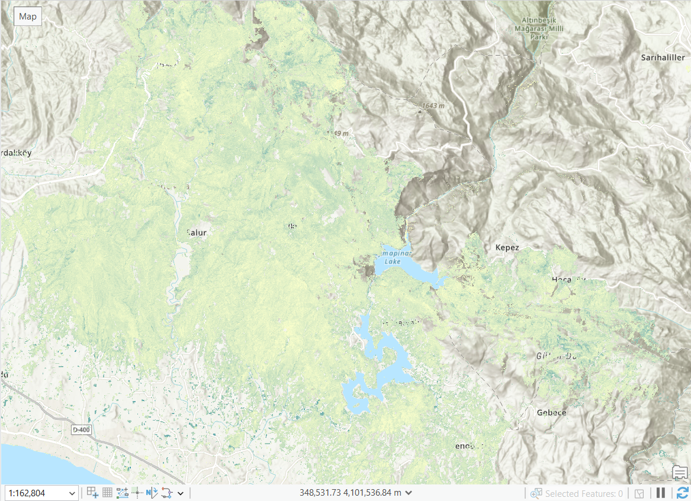
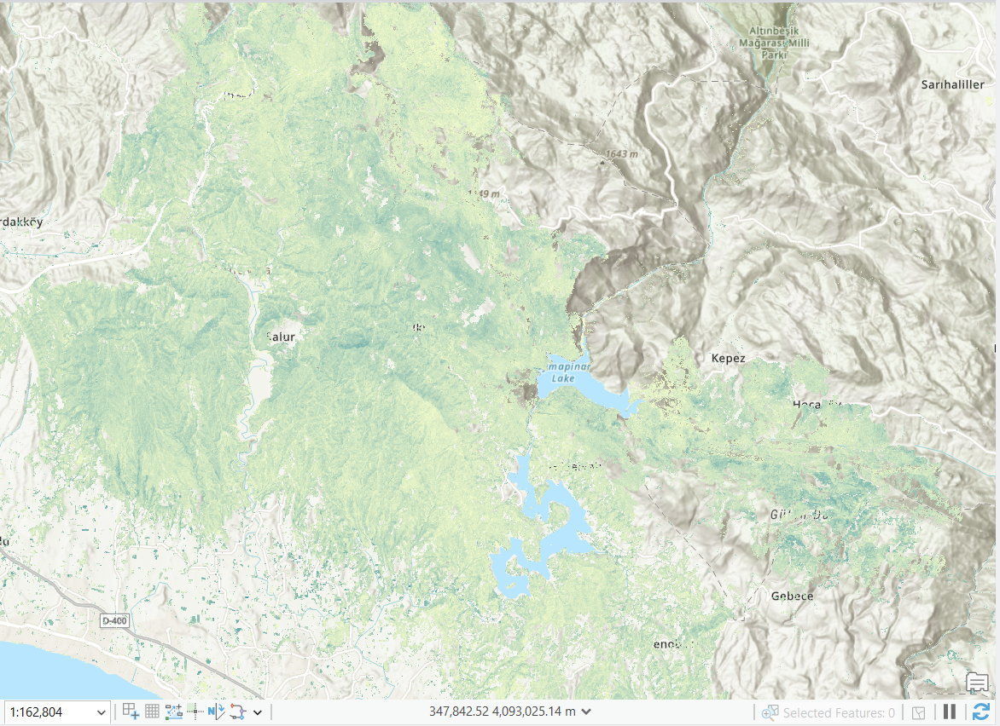
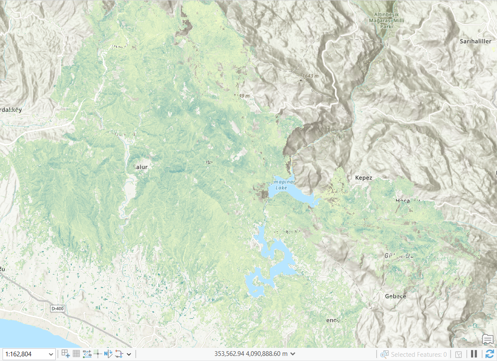
Built only from what held up
The model combines only aspect (50%) and vegetation density / fuel load (50%) — the two variables confirmed in Section 04. It covers the whole landscape, not just the historical burn scar, so it also scores risk in forest that hasn't burned yet.
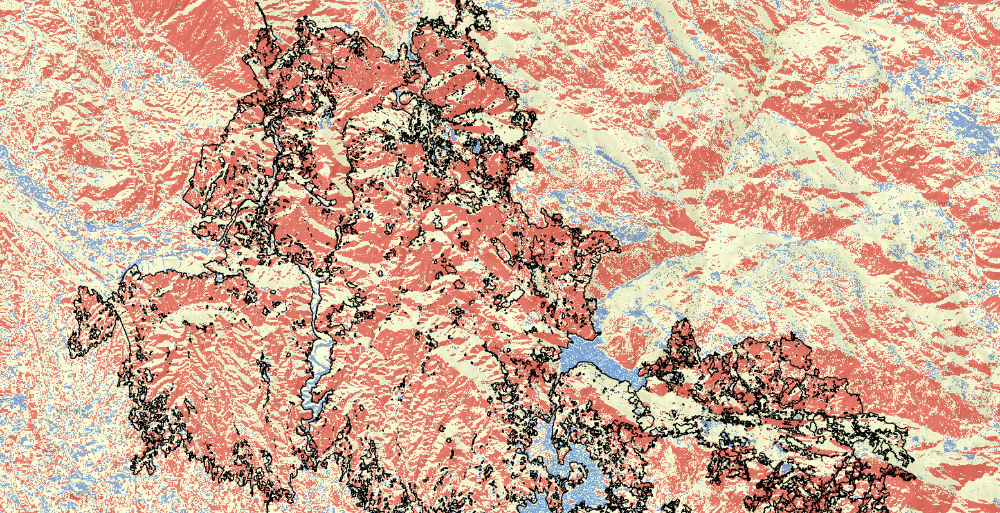
The validation is itself the finding
The 2021 Manavgat fire is a clear illustration of how climate extremes translate into ecological damage. In this project, every figure — burned area, meteorological anomaly, risk factors, human impact, carbon output — was either measured directly from satellite data or checked against an independent source before being reported.
The value of spatial intelligence in pre-disaster risk management doesn't come from a map that looks convincing. It comes from knowing which assumption survived contact with real data, and being willing to drop the one that didn't.